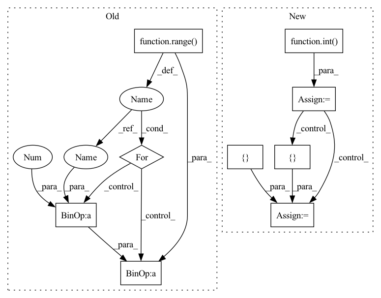

Pattern ID :73
Before Change
self.n_filters = 64
layers = []
for i in range( 4) :
in_channels = self.n_filters * (2 ** (i - 1 )) if i > 0 else 3
out_channels = 2 * in_channels if i > 0 else self.n_filters
layers += [After Change
img_size = config["img_shape"][0]
dim_in = 256 /ǘ**14 // img_size
blocks = []
blocks += [nn.Conv2d(3, dim_in, 3, 1, 1)]
repeat_num = int( np.log2(img_size)) - 2
for _ in range(repeat_num):
dim_out = min(dim_in*2, max_conv_dim)
blocks += [ ResBlk(dim_in, dim_out, downsample=True)In pattern: SUPERPATTERN
Frequency: 4
Non-data size: 9
Instances Fragment ID: 388948
Project Name: avivga/overlord
Commit Name: fa020664bf0dcbd11e72953117146be2cdbc3b48
Time: 2020-05-29
Author: avivga@gmail.com
File Name: model/modules.py
M Class Name: Discriminator
N Class Name: Discriminator
M Method Name: __init__(3)
N Method Name: __init__(2)
M Parent Class: nn.Module
N Parent Class: nn.Module
M File Name: model/modules.py
N File Name: model/modules.py
M Start Line: 193
M End Line: 206
N Start Line: 81
N End Line: 103
Before Change
self.config = config
layers = []
for i in range( self.config["style_encoder"]["n_layers"]) :
in_channels = self.config["style_encoder"]["filters"] * (2 ** (i - 1 )) if i > 0 else 3
out_channels = 2 * in_channels if i > 0 else self.config["style_encoder"]["filters"]
layers += [After Change
img_size = config["img_shape"][0]
dim_in = 2**14 // img_size
blocks = []
blocks += [nn.Conv2d(3, dim_in, 3, 1, 1)]
repeat_num = int( np.log2(img_size)) - 2
for _ in range(repeat_num):
dim_out = min(dim_in*2, max_conv_dim)
blocks += [ ResBlk(dim_in, dim_out, downsample=True) Fragment ID: 388950
Project Name: avivga/overlord
Commit Name: dffe3cb71a1c6c5500c019edf4a07d4443b84cd8
Time: 2020-05-19
Author: avivga@gmail.com
File Name: model/modules.py
M Class Name: StyleEncoder
N Class Name: StyleEncoder
M Method Name: __init__(3)
N Method Name: __init__(2)
M Parent Class: nn.Module
N Parent Class: nn.Module
M File Name: model/modules.py
N File Name: model/modules.py
M Start Line: 209
M End Line: 226
N Start Line: 130
N End Line: 155
Before Change
self.config = config
layers = []
for i in range( self.config["discriminator"]["n_layers"]) :
in_channels = self.config["discriminator"]["filters"] * (2 ** (i - 1 )) if i > 0 else 3
out_channels = 2 * in_channels if i > 0 else self.config["discriminator"]["filters"]
layers += [After Change
img_size = config["img_shape"][0]
dim_in = 2**14 // img_size
blocks = []
blocks += [nn.Conv2d(3, dim_in, 3, 1, 1)]
repeat_num = int( np.log2(img_size)) - 2
for _ in range(repeat_num):
dim_out = min(dim_in*2, max_conv_dim)
blocks += [ ResBlk(dim_in, dim_out, downsample=True) Fragment ID: 388945
Project Name: avivga/overlord
Commit Name: dffe3cb71a1c6c5500c019edf4a07d4443b84cd8
Time: 2020-05-19
Author: avivga@gmail.com
File Name: model/modules.py
M Class Name: Discriminator
N Class Name: Discriminator
M Method Name: __init__(3)
N Method Name: __init__(2)
M Parent Class: nn.Module
N Parent Class: nn.Module
M File Name: model/modules.py
N File Name: model/modules.py
M Start Line: 166
M End Line: 179
N Start Line: 98
N End Line: 117
Before Change
self.conv1 = nn.Conv2d(3, 64, kernel_size=9, stride=1, padding=4)
for i in range( self.n_residual_blocks) :
self.add_module("residual_block_" + str(i + 1 ), ResidualBlock())
self.conv2 = nn.Conv2d(64, 64, kernel_size=3, stride=1, padding=1)
self.bn = nn.BatchNorm2d(64)After Change
rThe main architecture of the generator.
def __init__(self, scale_factor):
upsample_block_num = int( math.log(scale_factor, 2))
super(Generator, self).__init__()
// First layer
self.conv1 = nn.Sequential(
nn.Conv2d(3, 64, kernel_size=9, padding=4),
nn.PReLU()
)
// Residual blocks
residual_blocks = []
for _ in range(16):
residual_blocks.append(ResidualBlock(64))
self.residual_blocks = nn.Sequential(*residual_blocks)
// Second conv layer post residual blocks
self.conv2 = nn.Sequential(
nn.Conv2d(64, 64, kernel_size=3, stride=1, padding=1),
nn.BatchNorm2d(64, 0.8)
)
// Upsampling layers
upsampling = []
for out_features in range(upsample_block_num):
upsampling += [
nn.Conv2d(64, 256, 3, 1, 1),
nn.BatchNorm2d(256),
nn.PixelShuffle(upscale_factor=2),
nn.PReLU() Fragment ID: 388947
Project Name: lornatang/srgan-pytorch
Commit Name: acd467b89c7ccd5ca556b43a505b5745feda6b21
Time: 2020-09-21
Author: liuchangyu1111@gmail.com
File Name: srgan_pytorch/model.py
M Class Name: Generator
N Class Name: Generator
M Method Name: __init__(2)
N Method Name: __init__(3)
M Parent Class: nn.Module
N Parent Class: nn.Module
M File Name: srgan_pytorch/model.py
N File Name: srgan_pytorch/model.py
M Start Line: 78
M End Line: 100
N Start Line: 24
N End Line: 60
Before Change
self.n_filters = 64
layers = []
for i in range( 4) :
in_channels = self.n_filters * (2 ** (i - 1 )) if i > 0 else 3
out_channels = 2 * in_channels if i > 0 else self.n_filters
layers += [After Change
img_size = config["img_shape"][0]
dim_in = 256 /ǘ**14 // img_size
blocks = []
blocks += [nn.Conv2d(3, dim_in, 3, 1, 1)]
repeat_num = int( np.log2(img_size)) - 2
for _ in range(repeat_num):
dim_out = min(dim_in*2, max_conv_dim)
blocks += [ ResBlk(dim_in, dim_out, downsample=True) Fragment ID: 388943
Project Name: avivga/overlord
Commit Name: fa020664bf0dcbd11e72953117146be2cdbc3b48
Time: 2020-05-29
Author: avivga@gmail.com
File Name: model/modules.py
M Class Name: Discriminator
N Class Name: Discriminator
M Method Name: __init__(3)
N Method Name: __init__(2)
M Parent Class: nn.Module
N Parent Class: nn.Module
M File Name: model/modules.py
N File Name: model/modules.py
M Start Line: 193
M End Line: 206
N Start Line: 81
N End Line: 103